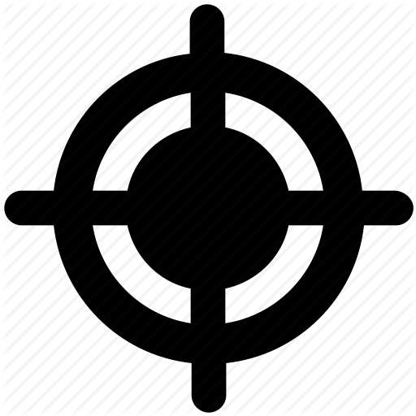
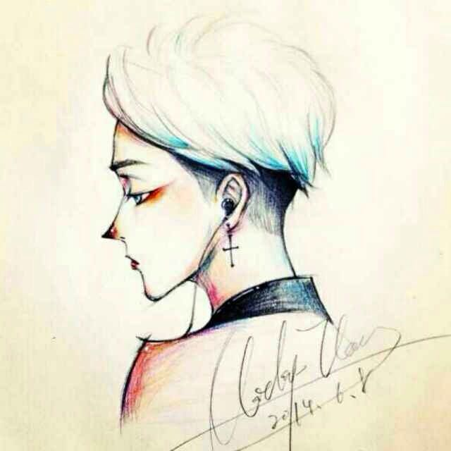
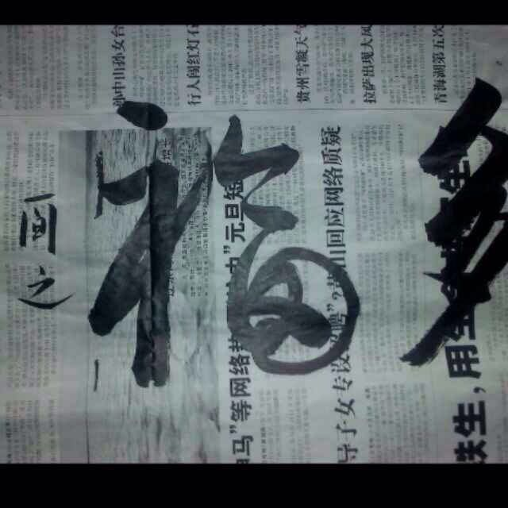
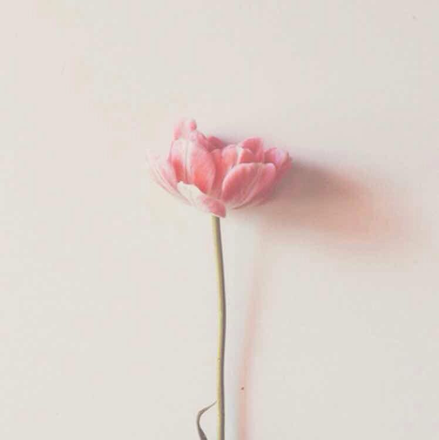
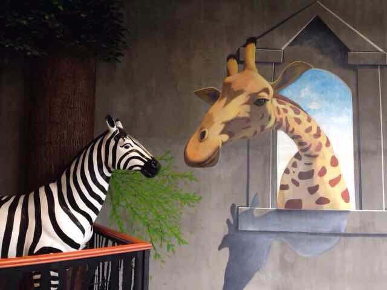

FOCUS
   
F·O·C·U·S由来
自由，对于我们来说更多的是有能力去学习自己感兴趣的技术，像天空中的那朵云一样，到处飘来飘去
开源，有公开，有交流，有思考，可不能和锁着的锁一样，要开着
协作，即是学习者，也是教育者，同时是协助者，三人行，我来了
共享，记录每一次的学习过程，发个转发，别人就看到了
坚持，不半途而废，做到有始有终，对X号说X
勤奋，敲代码，记笔记，看文章，没有勤奋可不行。来一杯咖啡，打起精神来